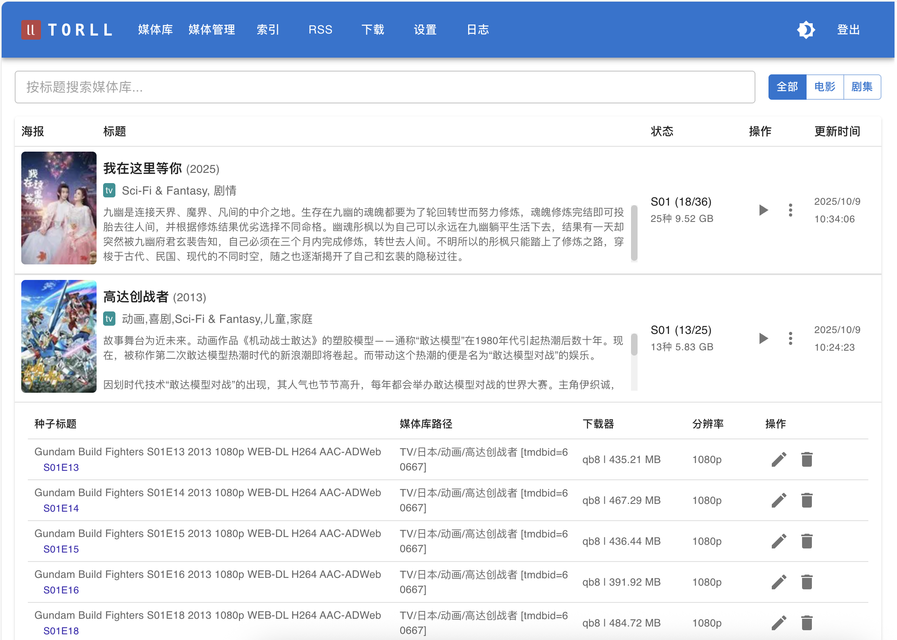
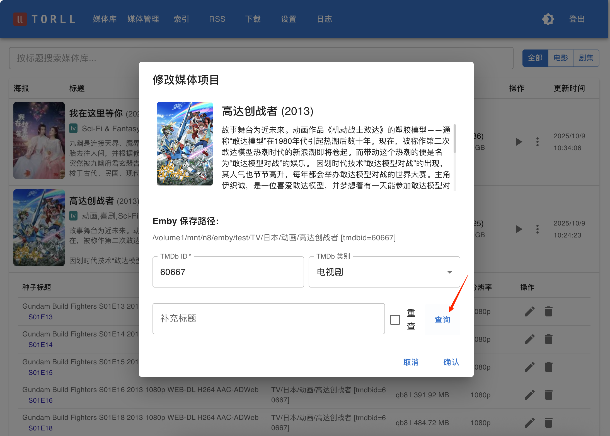

媒体库与媒体管理
媒体库是 torll2 的最终成果展示，它将所有下载、整理完毕的媒体文件，按电影或剧集进行聚合，并以海报墙的形式清晰地展示出来。你可以在 “媒体库” 和 “媒体管理” 页面访问此功能。



媒体条目 (Entry)
媒体库中的每一个“卡片”都是一个媒体条目，它代表一部电影或一部剧集，并聚合了与该影视相关的所有已下载文件。
媒体条目操作
在每个媒体条目的封面上，通常有两个高级操作按钮：
-
刷新状态 (
/scan):- 作用: 这个功能会重新扫描该媒体条目关联的所有物理文件，主要用于更新剧集的下载状态。
- 适用场景: 当你手动添加了某部剧集的后续几集，或者文件发生变化后，
torll2内部记录的剧集下载状态（例如，“已下载 5/10 集”）可能没有及时更新。点击此按钮，torll2会检查文件，并刷新这个状态。
-
重建硬链 (
/redo-hardlink):- 作用: 对该媒体条目关联的 所有 文件，重新执行一次
rcp脚本定义的硬链接/移动操作。 - 适用场景: 当你修改了“设置 -> TORCP 设置”中的文件命名模板，并希望将这个新规则应用到已经入库的媒体上时，此功能非常有用。它会根据新模板，在目标位置重新生成一套硬链接文件，并删除旧的链接。
- 作用: 对该媒体条目关联的 所有 文件，重新执行一次
关联的种子/文件列表
在每个媒体条目下方，会有一个列表，展示构成该条目的所有独立的下载任务（即种子文件）。列表的每一行都包含了丰富的信息，帮助你追溯来源和管理文件。
字段说明
- 种子标题 (
torname): 原始种子的标题，让你知道这个文件来源于哪个种子。 - 媒体库路径 (
emby_relpath): 文件被rcp脚本处理后，在媒体库中的相对路径。这个路径与你在下载器中设置的“本地映射路径 (Local Map Path)”相结合，构成了文件的完整物理路径。 - 下载器 (
downloader): 完成此下载任务的下载客户端的名称。 - 分辨率 (
resolution): 从种子标题中解析出的分辨率信息，例如1080p,2160p等。
单个文件操作
在文件列表的每一行末尾，通常还有针对这一个文件的操作按钮：
-
修改 (
/modify):- 作用: 手动修正
torll2的识别结果。如果系统将一个文件错误地关联到了某个电影/剧集，你可以通过此功能，输入正确的 TMDb ID，将其重新关联到正确的媒体条目上。
- 作用: 手动修正
-
删除 (
/delete):- 作用: 从媒体库中移除这个文件记录，并提供选项让你决定如何处理物理文件。
- 删除选项:
- 删除记录: 仅从
torll2的数据库中删除这条记录，硬盘上的文件不受影响。 - 删除种子: 在删除记录的同时，还会命令下载器删除对应的种子（不删除文件）。
- 删除文件: 在删除记录和种子的同时，还会将硬盘上对应的媒体文件一并删除。这是一个危险操作，请谨慎使用。
- 删除记录: 仅从